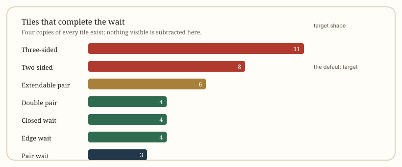

Strategy
Tile Efficiency: Waits and Winning Tiles
Efficiency is not a style choice. Given two hands that are one tile away, one of them is simply waiting on more tiles, and that hand is the better one.
At a glance
- The measure
- Out tiles, not number of waits
- Best shape
- Two-sided wait on 8 tiles
- Worst common shape
- Pair wait on 3 tiles
- Counting rule
- Four copies of each tile exist; subtract what is visible
- Priority
- Wider wait first, pattern value second
Tile efficiency is arithmetic, not style
Two hands can both be one tile from winning and still not be equal. One waits on a shape that eight tiles complete; the other on a shape that three tiles complete. Over enough hands, the wider wait wins more often, and that difference is large enough to decide a session.
The unit is the out tile: a copy of a tile that would complete your hand. Four copies of every tile exist, so a wait's width is four minus the copies you can already see in your hand, in the discards, or in the melds.
Seven wait shapes, ranked
| Shape | What it looks like | Out tiles | Example |
|---|---|---|---|
| Three-sided | A broken run that completes three ways | 11 | 456 plus 345 waits on 2, 5 and 6 |
| Two-sided | Two tiles at the edge of a run | 8 | 45 waits on 3 and 6 |
| Extendable pair | A near-run that can upgrade | 6 | 46 plus a lone tile; draw 5 to widen |
| Double pair | Two pairs, either completes | 4 | East pair plus white pair |
| Closed | Gap in the middle of a run | 4 | 46 waits on 5 |
| Edge | 12 or 89 at the boundary | 4 | 12 waits on 3 |
| Pair wait | Only the pair tile is missing | 3 | Three complete sets plus one tile |
Those counts assume nothing is visible. In a real hand, subtract every copy already in your own hand, in any river, or in any meld. A two-sided wait on 3 and 6 drops from 8 to 6 if you hold two 3s yourself.

Why the two-sided wait is the default target
It is not the widest shape — the three-sided wait beats it — but it is the widest shape you can reliably build. Three-sided waits come from specific broken shapes and are hard to plan for. A two-sided wait comes from any two adjacent middle tiles, which is the most common useful block in the game.
The practical consequence: when you have a choice between keeping 45 and keeping 46, keep 45. The closed wait on 5 is worth half as much.
When to upgrade a wait instead of taking it
A pair wait is legal and safe, and sometimes it is correct. But if the hand can be upgraded to a two-sided wait with one draw, the upgrade is usually worth the risk of one more turn.
Consider a hand of four complete sets and one lone tile. The immediate wait is the pair — three out tiles. Now step back one turn: three complete sets, a pair and a closed 4-6 block. That block waits on 5, four out tiles, but drawing a 3 or a 7 turns it into a two-sided block worth eight. Double the width for the cost of one turn.
The exception is late in the hand, or when an opponent is visibly close to winning. At that point the value of being one tile away exceeds the value of a wider wait you may never reach.
The rule about breaking a finished set
Breaking a complete set to chase a wider wait is almost always wrong. You trade a guaranteed set for a chance at a better one, and you lose the turn you spent doing it.
The one case where it is defensible: a complete set made of tiles that are nearly dead, where the set itself contributes little pattern value and the rest of the hand needs the space. Even then, count the out tiles before and after. If the number does not improve by at least half, do not do it.
Counting in practice: a three-step check
- List your waits. Name every tile that completes the hand, not just the one you are hoping for.
- Subtract visible copies. Your hand, all four rivers, all melds. Include the tiles you have discarded this hand.
- Compare to the alternative. A discard that changes your wait is only worth it if the new total is higher.
Doing this takes about ten seconds once you are used to it, and it is the difference between a player who guesses and a player who knows.
Efficiency is not the whole game
Wider waits win more hands, but they do not win bigger ones. In riichi, a narrow wait on a hand with three yaku can beat a wide wait on a hand with none. In Chinese Official, a wide wait that cannot reach 8 fan is worthless.
The correct order of operations is: check that the hand can be legally declared, then maximise the wait, then maximise the value. Players who reverse the first two steps spend a lot of time one tile from a hand they were never allowed to declare.
Quick answers
Which wait wins on the most tiles?
A three-sided wait, at up to 11 out tiles. It is rare, because it requires a specific broken shape rather than two adjacent tiles.
Should I always prefer a two-sided wait?
Usually, yes. It is worth 8 out tiles before anything is visible, twice the closed wait's 4.
Is it ever right to break a complete set?
Rarely. Only when the set's tiles are nearly dead and the wait improves substantially. Count before and after, and require a clear gain.
Does a wider wait always mean a better hand?
No. The hand must be legally declarable first. In riichi it needs a yaku; in Chinese Official it needs 8 fan. A wide wait on an illegal hand is worth nothing.